The Synchronet file transfer section is used for transferring data and program
files between the BBS and the remote user. Files are stored in a logical
hierarchy of libraries and directories. A library is a group of directories
that contain files of a similar subject matter.
An example file library/directory configuration:
Library Name Directory
---------------------------------
Main Text
Utilities
Business
Graphics
Games
Communications
Miscellaneous
Adult Text
Animation
GIF files
TGA files
DOS CD-ROM Utilities
Device Drivers
Business
Games
Communications
Programming
Windows CD-ROM Utilities
BMP files
WAV files
Device Drivers
Games
Desktop Publishing
Fonts
Run the SCFG utility, and select File Options from the menu. Following are example screens and the options available from the File Options sub-menu.
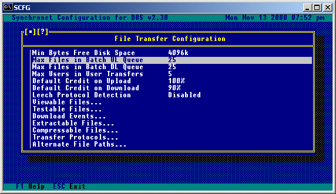
Min Bytes Free Disk Space:
This is the minimum about of disk space (in kilobytes) that is
necessary for a user to be allowed an upload.
Max Files in Batch UL Queue:
This is the maximum number of files that can be stored in the batch
upload queue. The definite maximum is 500 files.
Max Files in Batch DL Queue:
This is the maximum number of files that can be stored in the batch
download queue. The definite maximum is 500 files.
Max Users in User Transfers:
This is the maximum number of destination users in user to user
transfers. The definite maximum is 500 users.
Default Credit on Upload:
This is the default amount used for newly created directories.
Default Credit on Download:
This is the default amount used for newly created directories.
Leech Protocol Detection Percentage:
This value is the sensitivity of the leech protocol detection feature
of Synchronet. If the transfer is apparently unsuccessful, but the
transfer time was at least this percentage of the estimated transfer
time (based on the estimated CPS of the connection result code), then
a leech protocol error is issued and the user's leech download counter
is incremented. Setting this value to 0 disables leech protocol
detection. This option also allows you to set the minimum amount of
elapsed transfer time to be considered for a possible leech download.
Leech protocol programs are file transfer programs (usually using
Zmodem technology) that attempt to "fool" the BBS into thinking the
file was not successfully transferred, when in reality it was. This is
accomplished by the transfer program requesting a reposition (ZRPOS)
after the last successful block and then aborting (ZCAN). A file
transferred in this manner will not be considered a successful transfer
by Synchronet, but will be caught as a possible leech download and
notify the sysop (if this option is used).
This feature is also useful for detecting the partial download of image
(GIF) files. If you charge your users credits for downloads, this can
be a very useful feature in detecting dishonest users. If the user
accumulates a large number of leeches (as displayed in User Edit) and
the user never successfully downloads a file previously logged as a
possible leech download, the user is probably trying to get something
for nothing, though this is hard to prove without actually watching
the file transfer in progress.
This is a list of file types that have content information that can be viewed through the execution of an external program or Baja module. Here are a couple of command line examples for a few file types.
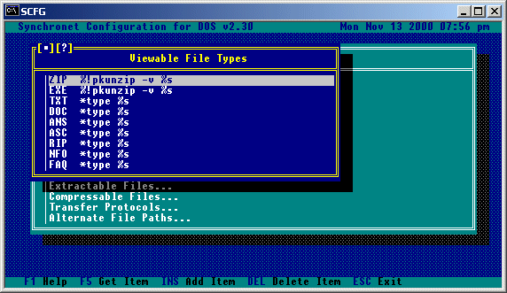
NOTE: When you select a file type from this list, you will be given one
additional option (Access Requirements) which is not shown here.
Users not meeting any access requirements which are set will not
be able to perform, or be affected by, that function.
This is a list of file types that will have a command line executed to test the file integrity upon their upload. The file types are specified by extension and if one file extension is listed more than once, each command line will be executed. The command lines must return a DOS error code of 0 (no error) in order for the file to pass the test. This method of file testing upon upload is also known as an upload event. This test or event, can do more than just test the file, it can perform any function that the sysop wishes. Such as adding comments to an archived file, or extracting an archive and performing a virus scan. While the external program is executing, a text string is displayed to the user. This "working" string can be set for each file type and command line listed. Shown is an example list of file types, and their respective sub-menus and configurations:
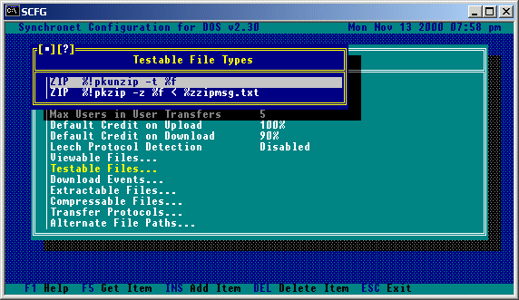 ZIP type files:
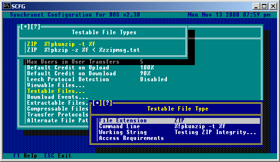¼ To add a ZIP comment to a ZIP type file:
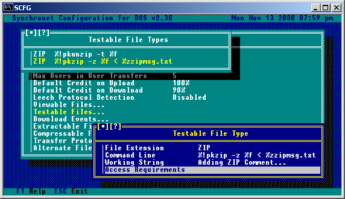¼ If an extension of '*' is specified, all files uploaded will be tested with this command line. An example would be when using Domain Upload Tester from Domain Entertainment:
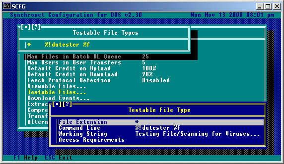
NOTE: Users not meeting any access requirements which are set will not
be able to perform, or be affected by, that function.
Download events are an event that you wish to have executed before a user downloads a file from your BBS. This can be useful adding a comment to a file from a CD-ROM before it gets sent to the user (as the example shows), or to perform a virus scan, or any other function you can think of. Here is an example showing how to change the comment in ZIP type files when a user attempts to download a file.
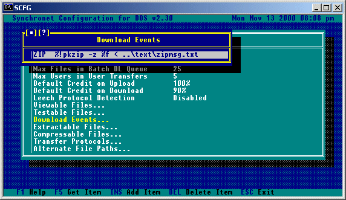
Selecting the available event will allow you to edit the options available.
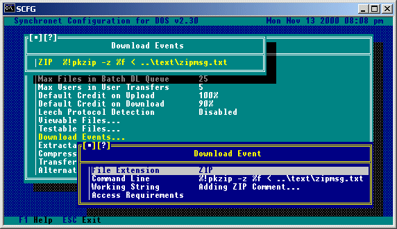
This is a list of archive file types that can be extracted to the temp directory by an external program. The file types are specified by their extension. For each file type you must specify the command line used to extract the file(s). Here are some example command lines for extracting various files:
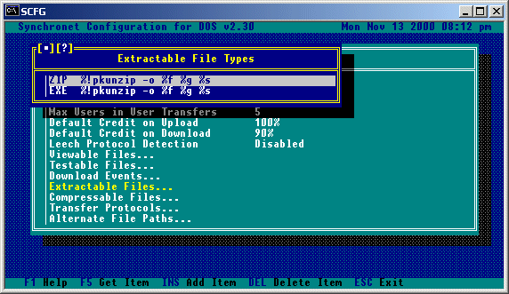
NOTE: When you select a file type from this list, you will be given one
additional option (Access Requirements) which is not shown here.
Users not meeting any access requirements which are set will not
be able to perform, or be affected by, that function.
Notes on command lines syntax:
The use of conversion specifiers are supported in all command lines
within SCFG. Conversion specifiers are proceeded by a percent (%)
symbol and are not case sensitive. The above command line examples use
the following specifiers:
%! EXEC directory:
If the program you are executing with this command line is not
located in your EXEC directory, you can specify the directory
where the program is located or, if the program is in your
search path, start the command line with just the program name
(no prefix). We suggest specifying the location of the program
for security reasons.
%f Filename:
This is the filename of the archive that is to be extracted.
%g Temp Directory:
This is the path to the temp directory. In the above command
lines, it is the destination of the extracted files.
%s File Specification:
This is the file specification to extract from the archive.
See Appendix A for a complete list of the available specifiers.
This is a list of archive file types that can be created for QWK packets and temporary archives for download. The file types are specified by their extension. For each file type you must specify the command line used to create the archive. Here are some example command lines for various compression types:
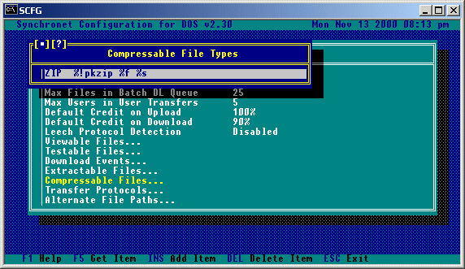 For these compression command lines to work, you must have the appropriate executable files (PKZIP, ARJ, and LHA) in your EXEC directory.
This is a list of file transfer protocols that can be used to transfer files either to or from a remote user. For each protocol, you can specify the mnemonic (hot-key) to use to specify that protocol, the command line to use for uploads, downloads, batch uploads, batch downloads, bi-directional file transfers, and the support of DSZLOG. If the protocol doesn't support a certain method of transfer, or you don't wish it to be available for a certain method of transfer, leave the command line for that method blank. Be advised, that if you add or remove any transfer protocols, you will need to edit the protocol menus (ULPROT, DLPROT, BATUPROT, BATDPROT, and BIPROT) in the TEXT\MENU directory accordingly. The '%f' command line specifier is used to represent the filename or batch file list. The following is an example list of protocols and their respective sub-menus and options:
IMPORTANT: If you are running Synchronet as a Telnet Server then you
must use a Protocol that supports FOSSIL Communications
such as FDSZ or CEXYZ. Synchronet v3.0 comes pre-configured
for use with FDSZ.
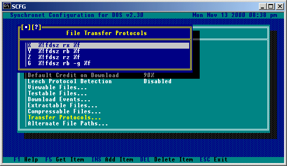
FDSZ Xmodem
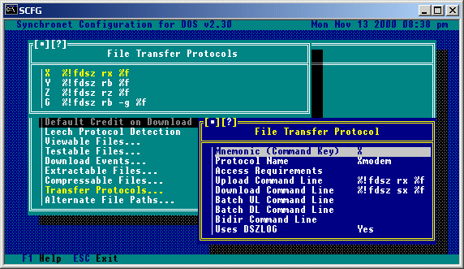
FDSZ Ymodem
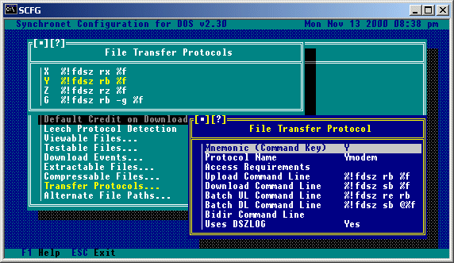
FDSZ Zmodem
FDSZ Ymodem-G
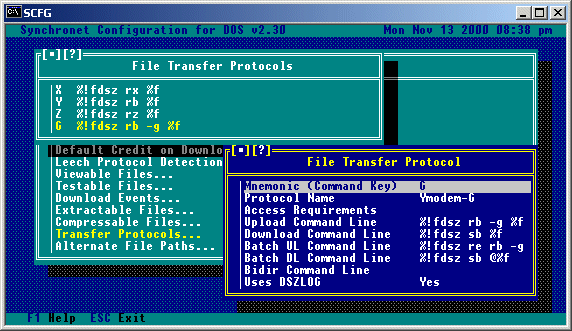
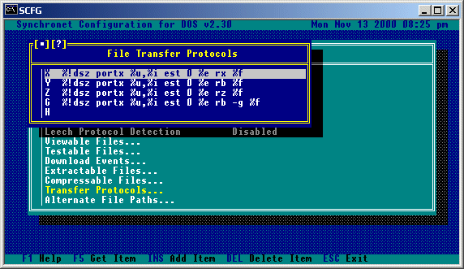 DSZ Xmodem:
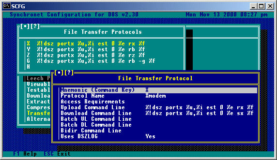 DSZ Ymodem:
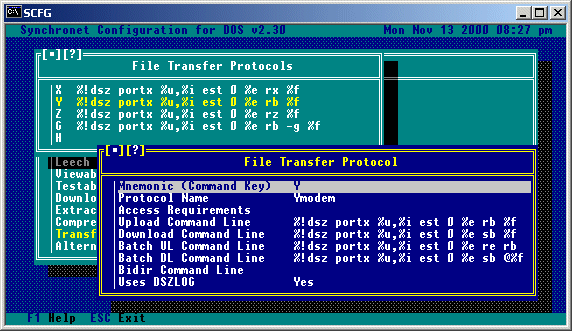 DSZ Zmodem:
DSZ Ymodem-G:
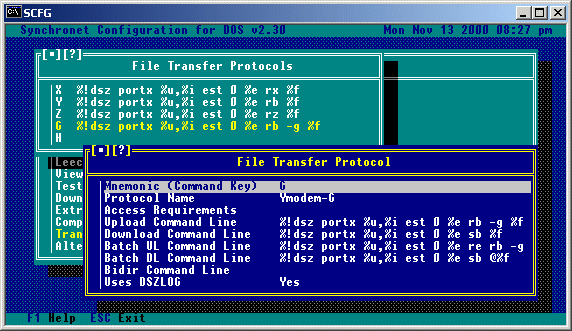
HS/Link Bi-Directional Transfers:
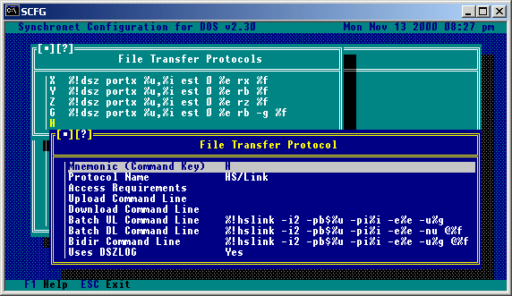
NOTE: Users not meeting any access requirements which are set will not
be able to use that protocol.
IMPORTANT: If you have Synchronet set to use anything other than UART
you will not be able to use the DSZ transfer protocols and will
need to locate a set of protocols that will work with your setup.
If you are using a UART serial board, there is no reason why
Synchronet should not be set to use UART. Just because a front-end
mailer or door game requires a FOSSIL driver, it does NOT mean
that you must also set Synchronet to use a FOSSIL.
Select "File Transfers" from the SCFG main menu. Then select "File Libraries". Hit INS (insert key) to create a file library. File libraries are groups of file directories that have a similar subject matter or other common element. File libraries are often used to separate Program files and Data files or files stored on a Hard disk and files stored on CD-ROM. An example configuration that separates programs from data: Library Directory --------------------------------- Programs Games Programs Utilities Programs Business Programs Communications Programs Graphics Programs Programs Programming Data Files Text (Documentation, Stories, Cheats) Data Files Program Source Code (C, ASM, PAS, BAS) Data Files Still Pics (GIF, PCX, TIF) Data Files Animation (FLI, GL, DL) Data Files Sound (MOD, WAV, MID) Data Files Other Example configuration that separates hard disk directories from CD-ROM directories: Library Directory ~~~~~~~~~~~~~~~~~~~~~~~~~~~~~~~~~ Hard Disk Text Hard Disk Games Hard Disk Utilities Hard Disk Business Hard Disk Graphics Hard Disk Communications Hard Disk Graphics Programs Hard Disk Programming Hard Disk Graphics, Animation, and Sound GIF CD-ROM G Rated GIF CD-ROM G Rated 640x480 GIF CD-ROM G Rated 800x600+ GIF CD-ROM R Rated GIF CD-ROM R Rated 640x480 GIF CD-ROM R Rated 800x600+ GIF CD-ROM X Rated GIF CD-ROM X Rated 640x480 GIF CD-ROM X Rated 800x600+ PD/ShareWare CD-ROM Games - Mono, CGA, EGA PD/ShareWare CD-ROM Games - VGA PD/ShareWare CD-ROM Utilities PD/ShareWare CD-ROM Communications PD/ShareWare CD-ROM Graphics and Desktop Publishing PD/ShareWare CD-ROM BBS Software and Utilities PD/ShareWare CD-ROM Programming PD/ShareWare CD-ROM Windows Programs, Fonts, Icons, etc. You must have at least one file library and one file directory for anyone to be able to use the file transfer section. Following is a list of options available when creating or modifying a file library.
Selecting a library name from the list of available libraries will give you a sub-menu of options for that library.
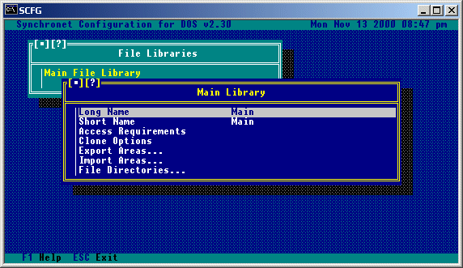
Long Name: This is a description of the library displayed in library listings. Short Name: This is a description of the library displayed at prompts. Access Requirements: These are the requirements which must be met by a user account in order to access this library. Clone Options: Use this command to copy the options of the first directory in this library to all the other directories in the library. Export Areas: If you wish to export the area information of all the directories in the current file library to a text file, use this option. Import Areas: If you wish to import a text file of area information into the current file library, use this option.
After you have created at least one file library, you need to create directories for the library. Creating a file directory is much like creating a file library except that you will be prompted for an internal code to use. The internal code should be an abbreviation of the name of the directory or something else that specifies the contents of the directory. For each directory, you need to specify the file storage path. This is where the files are actually located (Drive and directory) on your system. If you do not specify a storage path, a sub-directory will be created off of your DATA\DIRS directory with the directory's internal code as the name of the sub-directory. If you wish to use the default storage path (DATA\DIRS\<code>), you'll need to move any files that you wish to be added to the BBS file database to that sub-directory. If you are adding CD-ROM directories, be sure to set the "Check for file existence" and "Search for New Files" toggle options to "No", and "Slow Media Device" to "Yes" for each of your CD-ROM file directories. Following is a list of options available in the SCFG when creating or modifying a file directory.
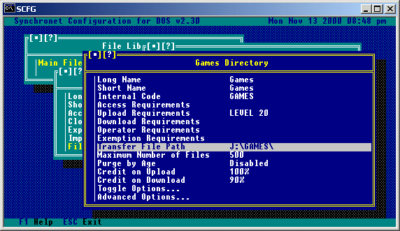
Long Name:
This is a description of the file directory that is displayed in
directory listings.
Short Name:
This is a description of the file directory that is displayed at
prompts. Some short names have a predetermined meaning:
Temp:
This short name is reserved and cannot be used.
Offline:
This short name specifies that this directory is to hold
offline files for the selected library and is treated a bit
differently than other directories. It will not be included
in new-scans and will be the default location of files that
are removed or moved. A directory with this short name should
have the upload level set to 90 and the access level and flags
set the same as the library. There can only be one directory
per library with this short name.
Sysop:
This short name specifies that this directory will be the
destination for files uploaded by users with the 'Z' command
from the transfer section. There should only be one directory
with this short name and it should belong to the most
accessible library. A directory with this short name should
have the access level set to 90 and the upload level and flags
set the same as the library.
User:
This short name specifies that this directory will be the
storage point for user to user transfers. There should only be
one directory with this short name and it should belong to the
most accessible library. Users can upload a file to another
user or group of users with the '/U' transfer section command.
Users download files sent to them with the '/D' transfer
section command. A directory with this short name should have
the access level set to 90 and the upload level and flags
set the same as the library or at whatever level the sysop
wishes to allows users to use the user to user transfer
facilities.
Uploads:
This short name specifies that this directory will be used
for uploads if the user attempts to upload to a directory where
he or she does not have sufficient upload access.
If you wish all uploads to automatically go into one specific
directory, set the required upload level for all other
directories to 90 or higher (Sysop). If you don't want users
to be able to see the files in this directory or download them
until they are moved by the sysop, set the required access
for your "Uploads" directory to level 90 or higher. Creating
an "Uploads" directory also allows "Blind" batch uploads from
the users (files need not be added to the upload queue first).
Internal Code:
This is an internal code for SBBS to distinguish this directory from
the others on the system. This must be a unique name of up to 8 valid
DOS filename characters. The code TEMP is reserved and cannot be used.
Access Requirements:
This is a list of security requirements to access this directory.
Upload Requirements:
This is a list of security requirements to upload to this directory.
Download Requirements:
This is a list of security requirements to download from this
directory.
Operator Requirements:
Any users meeting these criteria will be able to perform Sysop type
activities for this directory.
Exemptions Requirements:
Any users meeting these criteria will be considered exempt from
credit deductions when transferring files from this directory.
Transfer File Path:
This is the actual path for the storage of the files that belong to
this directory. If no path is specified, the directory DATA\DIRS\CODE,
where CODE is the internal code for this directory, will be used to
store the files.
Maximum Number of Files:
This is the maximum number of files that will be allowed in this
directory. Once this number of files is reach, no uploads will be
allowed.
Purge by Age:
This is maximum age of files (in days) to keep in this directory.
The DELFILES utility (included with Synchronet) must be run as
a timed event to automatically purge old files from your file areas.
Credit on Upload:
If Credit Uploads is set to Yes in the toggle options for this
directory, users will be credited with this percentage of the file
size (in bytes) in credits when uploading a file to this directory.
Credit on Download:
If Credit Downloads is set to Yes in the toggle options for this
directory, users will be credited this percentage of credits for
subsequent downloads of any file that they upload to this
directory.
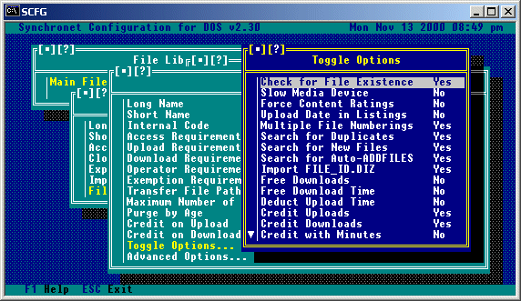
Check for File Existence:
If this option is set to 'Yes', when files are listed in the transfer
section, each file is checked to see if it actually exists in the
DOS directory. If the file doesn't exist, the credit value is displayed
in high intensity blinking and is followed by a minus symbol. Setting
this option to 'No' speeds up the file listings, but files not actually
on disk will appear just as the others. Directories with a short name
of Offline should have this value set to 'No' as they should solely
contain files that aren't actually in the DOS directory. Directories
that are stored on CD-ROM or other slow random access device should
have this option set to 'No'.
Slow Media Device:
If this option is set to 'Yes', files will be copied from the normal
storage directory into the temp directory and downloaded from there.
This option is helpful in reducing the overhead associated with
multiple simultaneous user access to a slow media device such as
CD-ROM.
Force Content Ratings:
If this option is set to 'Yes', when a user uploads a file he is
prompted to rate the content of the file with a single character
(usually G, R, or X), and the file description will begin with the
rating letter contained in brackets.
Upload Date in Listings:
Setting this option to 'Yes' will cause Synchronet to place the date
that a file was uploaded onto the first line of the file description,
similar to the Multiple File Numberings option.
Multiple File Numberings:
If this option is set to 'Yes', when a user uploads a file he is
asked if the file he is uploading is part of a set of files. If the
user answers 'Yes', he is then prompted for the total number of files,
the number of the file he is uploading, and the file description will
end with the numbering in the format "[n/t]", where n is the file
number and t is the total number of files.
Search for Duplicates:
If this option is set to 'Yes', this directory will be searched for
duplicate filenames when a user attempts to upload a file.
Search for New Files:
When this option is set to 'Yes' this directory will be included in
new file scans (for those users than have access). Set this option
to "No" for CD-ROM directories or directories that will not be
receiving new files on a regular basis.
Search for Auto-ADDFILES:
When this option is set to 'Yes' this directory will be searched for
FILES.BBS by the ADDFILES program when using the auto-add feature.
Import FILE_ID.DIZ:
When set to 'Yes', Synchronet will attempt to import the FILE_ID.DIZ
or DESC.SDI of any files uploaded to this directory into the file
description.
Free Downloads:
If you want all files downloaded from this directory to be free for
the downloader (not cost any credits regardless of the credit value),
set this option to 'Yes'.
Free Download Time:
If you do not want time spent during downloading to be subtracted from
the users time online, this option should be set to 'Yes'.
Deduct Upload Time:
If you want the time spent uploading a file to be subtracted from the
users available online time, this option should be set to 'Yes'.
Credit Uploads:
If you want users who upload files to this directory to get credit
for their upload based on the "Credit on Upload" percentage, set
this value to 'Yes'.
Credit Downloads:
If you want users who upload files to this directory to get credit
for subsequent downloads of the file based on the "Credit on Download"
percentage, set this value to 'Yes'.
Credit with Minutes:
Setting this option to 'Yes' will cause the uploading user to receive
time (in minutes) for their upload rather than credits. The minutes
a user receives will be based upon the percentage awarded multiplied
by the time it took for the recipient of the file to download it.
Anonymous Uploads:
If you want users with the 'A' exemption to be able to upload file
anonymously to this directory, set this option to 'Yes'. If you want
all uploads to this directory to be automatically forced anonymous, set
this option to Only.
Purge by Last Download:
This option is for use in conjunction with the Synchronet DELFILES
program. When deleting files from the filebase, if this option is
set to 'Yes', it will compare the maximum age specified by the
"Purge by Age" field to the date the file was last downloaded. If set
to 'No', the maximum age will be compared to the date the file was
uploaded.
Mark Moved Files as New:
If this option is set to 'Yes', then when a file is moved from this
directory to another, it's upload date will be reset to the current
date/time automatically.
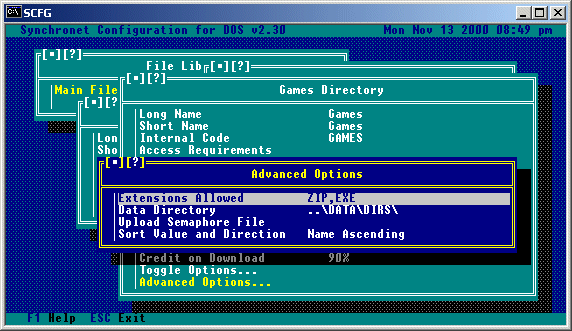
Extensions Allowed:
This is a list of file extensions (separated by commas) that are
allowed to be uploaded to this directory.
Data Directory:
This is the path where the data for this directory will be located.
Upload Semaphore File:
This is the path and name of a semaphore file used to trigger your
front-end mailer when a file is uploaded.
Sort Value and Direction:
Directories can be sorted either by filename or upload date in an
ascending or descending order. This option selects the value to sort
on and in which direction.
Now that you've created at least one file library and one file directory inside
that file library, any files located in the storage path for that directory
are not automatically available for users to download. The file has to be
added to the BBS file database first.
Manual Upload
Logon to the BBS as yourself (most likely, user #1), go to the file transfer
section. Select the file area you wish to add the file to and hit 'U' for
upload. Now enter the filename. If the file is already in the storage directory
that you specified in SCFG you will be prompted for file descriptions and other
questions about the file. If the file is not already in the storage directory,
you will be prompted for the path from where to copy the file.
ADDFILES
If you have an ASCII list of your files with descriptions (often called
FILES.BBS or DIR##), you'll want to use the Synchronet ADDFILES program to
import this file and description information into the BBS file database. This
is usually only the case for CD-ROMs and when converting a file database from
another BBS. See the Utility Reference Chapter for more information on
ADDFILES.
Bulk Upload
To add the files that are located in the storage paths of your configured
directories, exit the configuration program, logon to the BBS as yourself
(User #1), go to the file transfer section ('T' from the main menu), and type
";UPLOAD ALL" then hit ENTER. If there are any files that are in your storage
paths, but not already in the BBS file database you will be prompted to enter
a description for each file.
Each library can have an offline file directory. This is where you can place files that have been removed from the system, but the file information (name, description, uploader, etc.) remains in the database. Offline directories are treated special. They are not scanned for new files and are automatically used as an optional destination for the file information when a file is removed by a sysop. Offline file directories are specified by having the short name of "Offline" (not case sensitive). Only one offline directory can be specified per library. Offline file directories should have the "Check for file existence" toggle option set to "No". The minimum security level to upload should be set to 90 so that users will not be allowed to upload to this directory.
A sysop file directory is a directory that users can upload to, but they can not see nor download from. You can only have one sysop directory on the system and it can belong to any one of the file libraries. A sysop file directory is specified by the short name of "Sysop" (not case sensitive) and will be used as the destination directory for uploads with the 'Z' (upload to sysop) transfer section command. The minimum security level to access should be set to 90 or higher so that only sysops can view the directory and download from it and the upload access level should be set to 0 (or higher, if you want to restrict the number of users who can upload to the sysop dir).
A user-to-user transfer directory is used for users to send a file directly to another user (or group of users) with only that user (or group of users) being able to see the file and download it. It's like a private e-mail file directory. Users send files to other users with the "/U" command and download files from other users with the "/D" command. This feature is only enabled if the sysop creates a user-to-user transfer directory. This directory can belong to any library on the system, but must have a short name of "User" (not case sensitive). The minimum security level to access should be set to 90 or higher so that only sysops can view the directory and download any file they wish from it and the upload access level should be set to 0 (or higher, if you want to restrict the number of users who can upload user-to-user files). This directory should have the "Allow extended descriptions" toggle option set to "Yes" so that the uploader of the file can attach a more detailed description if he or she wishes.
A default upload directory is used if you want all uploads to go to a single directory. If you wish to use this feature, you must create a directory with the short name up "Uploads" (not case sensitive). Set the minimum level to access to 90 or higher if you do not wish to allow users to see this directory. Set the upload access level to 0 (or higher, if you want to restrict the number of users who can upload to this directory). You should set the required upload access level of all other directories in the library to 90 or higher so that all upload attempts to those directories will force the file uploaded into this directory.
Some sysops would like for their users to be able to do a batch upload of files to a directory without having to enter the files into an upload queue before hand. These are called Blind Batch Uploads. In order for this feature to work, you MUST have created a default upload directory (see the section above describing this procedure). Once you have created a default upload directory, the user need only go to the Batch Transfer menu and begin his upload.
It is assumed that you have already installed your CD-ROM drive and any
necessary device drivers so that it can be accessed as a DOS device (like
a hard disk or floppy disk).
Explore your CD-ROMs directories to find out what directories contain what
kind of files. Make notes of the directory paths and a description you would
like to give that directory. Example:
Path Description
---------------------------
D:\G-GIFS G Rated GIFs
D:\GAMES Games
D:\UTILS Utilities
Now find the ASCII description lists on the CD-ROM for the individual
directory contents and note which description files are for which directories.
If multiple list formats are supplied, use the format that most closely
matches this (FILES.BBS format):
FILENAME.EXT This is a file description
or the DIR## format:
FILENAME.EXT 530114 07-16-91 This is a file description that will be too
| long, so it wraps to the next line.
Example for file list notes:
File List Description
-----------------------------------
D:\DESC\GIFS.LST GIFs
D:\DESC\GAMES.LST Games
D:\DESC\UTILS.LST Utilities
Or preferably:
File List Description
-----------------------------------
D:\GIFS\FILES.BBS GIFs
D:\GAMES\FILES.BBS Games
D:\UTILS\FILES.BBS Utilities
Now run SCFG from your node directory. Go to "File Transfers", then "File
Libraries". Hit the INS key to add a new file library. Name it "CD-ROM" or a
description of what the CD-ROM contains. Now hit ENTER on the new library
and select "File Directories". Hit INS to add each directory specifying the
name and file storage path for each. Example:
Long and Short Name Internal Code File Path
---------------------------------------------------------
GIFs CD-GIFS D:\GIFS
Games CD-GAMES D:\GAMES
Utilities CD-UTILS D:\UTILS
Now hit HOME and ENTER to edit the first directory. Select "Toggle Options"
and hit enter. Set "Check for File Existence" and "Search for New Files" to
"No" and set "Slow Media Device" to "Yes". Hit ESC three times to go back to
the "CD-ROM File Library" menu. Select "Clone Options" and hit ENTER. Answer
"Yes" to clone the options of the first directory into the rest of the library.
Now exit SCFG and save changes.
From the DOS prompt, type:
SET SBBSNODE=C:\SBBS\NODE1
But use the correct path for your NODE directory. If you installed Synchronet
into a directory named "BBS" on drive D:, then you would type
SET SBBSNODE=D:\BBS\NODE1
Now run ADDFILES (from your EXEC directory) for each of your CD-ROM file
description lists (or only once if a FILES.BBS exists in each directory). See
the Utility Reference chapter for specifics on how to use ADDFILES. Example
(assuming description lists are in DIR## format):
ADDFILES CD-G-GIFS +D:\DESC\G-GIFS.LST 33 13
ADDFILES CD-R-GIFS +D:\DESC\R-GIFS.LST 33 13
ADDFILES CD-X-GIFS +D:\DESC\X-GIFS.LST 33 13
ADDFILES CD-GAMES +D:\DESC\GAMES.LST 33 13
ADDFILES CD-UTILS +D:\DESC\UTILS.LST 33 13
The following command will search ALL configured directories for FILES.BBS
lists and import the files from them:
ADDFILES *
If you have a FILES.BBS format list which has a different filename, this will
search ALL configured directories for that file and import the files from them:
ADDFILES *FILES.LST
These will add the file descriptions to your Synchronet file database.
Now you should be able to run SBBS and have users download files from your
CD-ROM.
Since a CD-ROM disk is "read only", you cannot alter the physical organization of files and directories on the CD-ROM. Normally, you would have one logical Synchronet file directory for every physical DOS directory. But for CD-ROMs that have their files spread across a large number of directories, you may not want your logical directory structure to mimic the physical structure. Synchronet can store roughly a thousand files per directory and many CD-ROMs have far less than that per directory to accommodate BBS software that have a lower maximum number of files per directory. Each logical directory in Synchronet takes up memory so it is advantageous to keep the number of directories to a minimum when working with large quantities of files. Synchronet's alternate file paths allow the sysop to add files from multiple physical directories into one logical directory on the BBS. Every logical directory on the BBS has a default storage path where uploaded files will be received and downloaded files are sent from. If you wish to add files to an existing logical directory that are not stored in the default storage path, then you will need to add an alternate file path that points to the location of these files. Then either use ADDFILES with the ".altpath" switch or use the ;ALTUL and ;UPLOAD sysop transfer commands to add the files. You will need to know the number of the alternate file path for which you are adding files from, so note which alternate path number you are uploading from before running ADDFILES or ;UPLOAD. Alternate file paths are useful for grouping files of a similar subject from different CD-ROMs into a single logical directory in Synchronet, thus freeing the sysop to organize the files based on content rather than physical storage location.
FTP Filename Aliases You can create a list of file aliases that will appear in your FTP root directory for:
Quick and easy access to often downloaded user files
Static filenames that corresponds to a dynamically changing filenames
e.g. ftp://vert.synchro.net/sbbs_for_dos.zip always points to the current
versioned filename of Synchronet for DOS (e.g. SBBS230B.ZIP)
Download access to files on the local disk not in the BBS file database
How? Edit the file CTRL/FTPALIAS.CFG (SBBSCTRL->FTP->Edit->Alias List). The format is similar to that of the Synchronet Mail Server ALIAS.CFG, one alias per line in the format:
alias path description
The alias is not case-sensitive and may not contain spaces. This is the filename that will appear in your FTP root directory.
The path element is either the full path and filename to a file on a local file system (e.g. C:\DOCS\MYFILE.TXT) or a virtual path to a file in the BBS file database. Virtual paths are specified as "bbs://lib/dir/filename" where lib is the library short name, dir is the directory internal code and filename is the actual filename of the referenced file (may be the long filename, but may not contain spaces).
The description is the optional description of the file that will be used in the dynamically generated Auto Index file (if you have this option enabled).
Lines beginning with a ';' are considered comments and are ignored.
Example Alias:
sbbs_for_dos.zip bbs://main/sbbs/sbbs230b.zip Current version for SBBS for DOS
Sysop Access To login with system operator access, you must login with a user account that has a security level of 90 or higher (user #1 usually has level 99) and enter your password as "pass:syspass" where pass is your personal password and syspass is the system password.
A successful sysop login will generate a login message stating "Sysop access granted". Logging in with just your personal password will give you normal (non-sysop) access.
Sysop access allows you to mount local file systems and will enable secure BBS database features in the future (such as deleting/renaming files).
Local File System Access This is a powerful new feature that allows the sysop to access any and all locally accessible files and file systems via FTP (very convenient for remote administration). The "Local File System" checkbox must be checked in the FTP configuration dialog in SBBSCTRL to enable this feature.
To access local file systems, you must first login with sysop access (see "Sysop Access" for details). Once logged in with sysop access, you may mount the local file system. There are two ways to mount the local file system (and subsequently to revert to the BBS file system):
SMNT (Structure Mount) Sysops may use the FTP "SMNT" command to mount the local files system. Since most FTP clients do not support the SMNT command, you'll probably need to use the "quote" feature of your FTP client to send the command to the FTP server.
The syntax is "SMNT new_dir" where new_dir is the file system specifier for the new directory used in the FTP hierarchy. Example: "SMNT C:\" would make the root directory of your local C drive your new current FTP directory (for Windows' command-line ftp, type "quote SMNT C:\").
You can access shared drives on other machines on your local area network by using "SMNT \\othersys\drive" where othersys is the name of the other computer and drive is the share name of the desired drive.
To switch back to (mount) the BBS file database, use "SMNT bbs:"
CD (Change Directory) Sysops can mount the local file system using a special case of the CD (CWD, XCWD) command. By prefixing "local:" to the new directory, the local file system will be automatically mounted. Example: "cd local:c:\".
Once the local file system is mounted, you can switch between drives and shared drives with the CD command (the "local:" specifier is not needed). Example: "cd d:\".
To access a shared drive on other machines: "cd \\othersys\drive".
To switch back to (mount) the BBS file system, use "cd bbs:".
Since some FTP clients do not support the SMNT command, nor allow users to enter verbatim FTP commands, the CD method is the easiest and most reliable method of accessing the local file system.
Copyright © 2000 by Rob Swindell
Synchronet BBS Software (Synchronet)
Version 3 is comprised of several documentation,
library, executable, and source code
files, all of which are covered by the
GNU General Public License with the exception of the following portions
covered by
the GNU Lesser General Public License:
SMBLIB and XSDK.
Synchronet Version 2 (for DOS and OS/2) and its source code was released to the
Public Domain by Digital Dynamics
in 1997 and remains Public Domain software today.
Synchronet Version 3 is not Public Domain software.
Rob Swindell
PO Box 501
Yorba Linda, CA 92885
http://www.synchro.net
For the complete Copyright Information please read the Copyright Documentation .